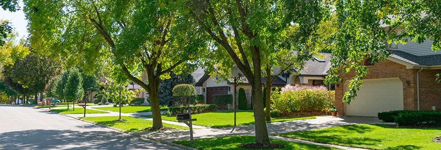

Restoration
Why Fall Is the Best Time to Grind Stumps Before Seeding

If a stump has been sitting in your yard all summer, fall is the season to finally deal with it, especially if seeding or sodding is part of the plan.
Restoration Works Best Right After Grinding
Once a stump is ground down, the hole that's left behind is the ideal moment to restore that part of the yard. Topsoil backfill is offered specifically for this, filling the depression left by grinding so the area is ready for grass rather than sitting as bare, uneven ground.
Doing this in fall lines up with the best seeding window of the year in eastern Iowa, which is exactly why this time of year sees more stump-to-lawn projects than any other season.
Grinding at Least 6 Inches Deep Matters for What Comes Next
Stumps are ground at least 6 inches below grade, which leaves enough depth for topsoil backfill to sit level with the surrounding lawn rather than leaving a mound or a dip. That depth is part of what makes seeding directly over a former stump location realistic instead of just an approximation.
Raised Roots Get Handled at the Same Time
Raised roots near the stump can be removed as part of the job, which matters if seed or sod is going down in that same section of yard. Leaving roots in place would undercut the whole point of restoring the area for grass.
Getting the Timing Right
The fall window doesn't stay open indefinitely. As the season moves toward the first hard freeze, restoration work gets harder to do well. Scheduling grinding earlier in fall, rather than waiting, gives seed or sod the most time to take before winter.
Common questions
Does grinding a stump leave a hole in the yard?
It leaves a depression where the stump was. Topsoil backfill is offered to fill that in and level it with the surrounding lawn.
Can roots near the stump be removed too?
Yes, raised roots can be removed as part of the job, which matters if you're planning to seed or sod that area afterward.
Is there a deadline for getting this done in fall?
Restoration work gets harder as the season moves toward the first hard freeze, so earlier in fall gives new seed or sod more time to establish.